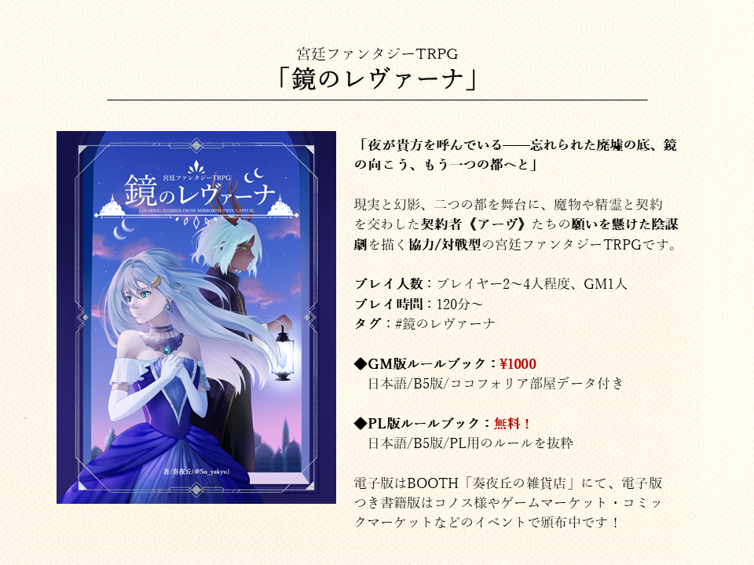
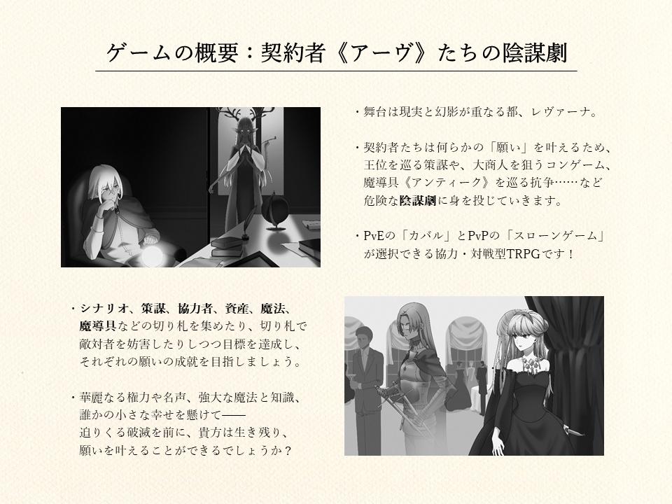
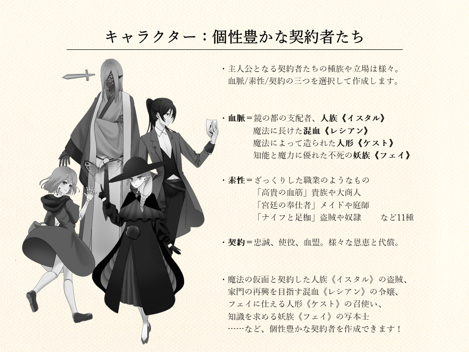
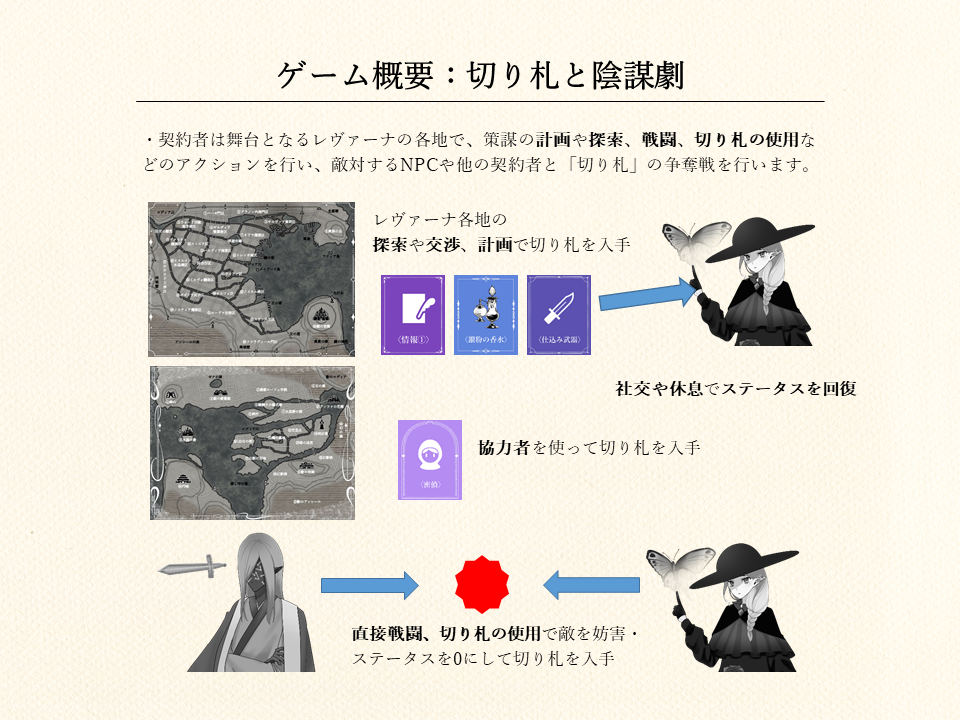
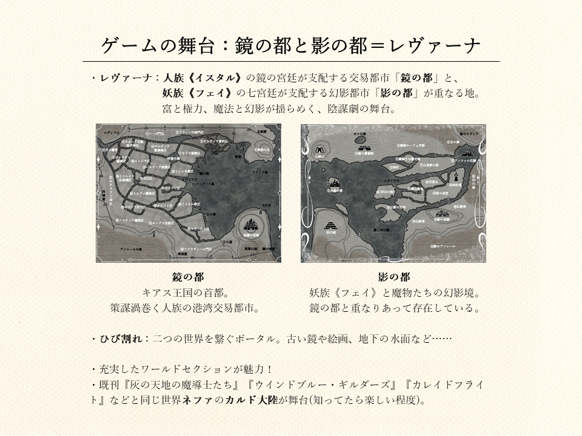
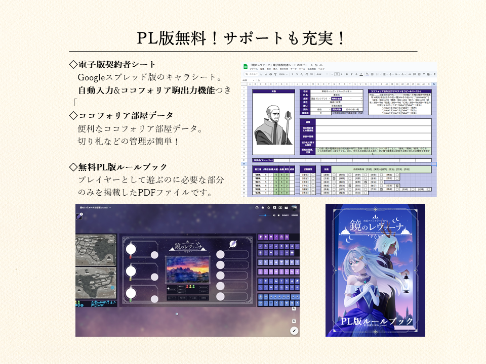

「鏡のレヴァーナ」作品ページ
「夜が貴方を呼んでいる——忘れられた廃墟の底、鏡の向こう、もう一つの都へと」
概要
「鏡の都」と「影の都」、現実と幻影の狭間——人ならぬものと契約を交わした契約者《アーヴ》たちの、願いを懸けた陰謀劇を描く宮廷ファンタジーTRPGです。ゲームマスター(GM)１人を含む２～５人、２時間～のプレイを想定しています。

どんなゲーム？
人族《イスタル》の交易都市「鏡の都」と、妖族《フェイ》の幻影都市「影の都」が重なる美しく危険な境界の地、全ての富と欲望の集う場所、レヴァーナへようこそ。
貴方たちは人ならぬものと契約した契約者《アーヴ》として、王位を巡る策謀や、大商人を狙うコンゲーム、魔導具《アンティーク》を巡る抗争などに身を投じていきます。
策謀、協力者、魔法などの切り札を集め、フェイズ目標を達成し、それぞれの願いの成就を目指しましょう。華麗なる権力や名声、強大な魔法と知識、誰かの小さな幸せを懸けて——迫りくる破滅を前に、貴方は生き残り、願いを叶えることができるでしょうか？

契約者《アーヴ》たちの物語
・契約者《アーヴ》は何らかの強い「願い」を叶えるために、精霊やフェイ、意志ある魔導具《アンティーク》など人ならぬ存在と契約を結んだ者たちです。
・契約者《アーヴ》は血脈・素性・契約を選択して作成します。魔法の仮面と契約した人族《イスタル》の盗賊、家門の再興を目指す混血《レシアン》の令嬢、フェイに仕える人形《ケスト》の召使い、知識を求める妖族《フェイ》の写本士……など、個性豊かな契約者の物語を描くことができます。

陰謀劇と切り札のルール
・『鏡のレヴァーナ』はPvEの「カバル」とPvPの「スローンゲーム」の二種類のシナリオを遊ぶことができる協力・対戦型TRPGです。
・契約者は舞台となるレヴァーナの各地で、策謀の計画や探索、戦闘などのアクションを行い、敵対するNPCや他の契約者と「切り札」(資産や情報、魔導具など)の争奪戦を行い、勝敗を決します。
・複雑な陰謀劇やリソースの準備や管理が切り札で簡単に再現できるシステムとなっています。

二つの都の世界
・物語の舞台は人族《イスタル》の交易都市「鏡の都」と、妖族《フェイ》の幻影都市「影の都」が重なる地、レヴァーナ。長い歴史と複雑な支配体系を持ち、「ひび割れ」と呼ばれる門によって繋がっています。
・二つの都の狭間で巻き起こる様々な物語を描くための充実したワールドセクションが魅力です(『灰の天地の魔導士たち』『ウインドブルー・ギルダーズ』などと同じ世界ネファの、違う大陸を舞台としています)。

サポート
本作のサポートは主にBoothページ↗にて提供されています。
コンテンツ
Boothの商品ページでは電子版ルールブック(ココフォリア出力機能付き、ルール部分は無料)、切り札の管理がしやすいココフォリアの専用ルーム(無料)をダウンロードできます。

また以下のリンクから
キャラクターシート（Googleスプレッドシート）↗にアクセスできます。
コンタクト
本作についてのお問い合わせ、ご感想などは作者Twitter↗にお気軽にお寄せください！